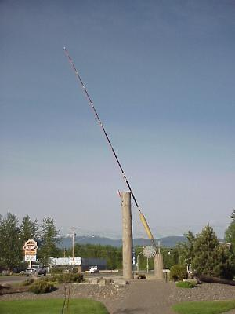
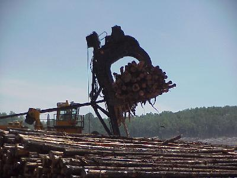
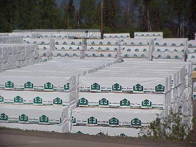
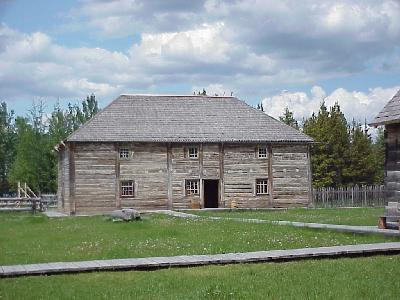

June 14, 7942 miles
| Packed up and on the road by 7:00 this morning. | |
| Our first stop was at the World's Largest Fly Rod in Houston, Bristish Columbia. It is 60 feet long with a 21 inch fly attached. |  |
| Our next big stop was at the Fraser Lake Sawmill, where they turn piles of logs like this into lumber... |  |
| ... like this. The Fraser Lake Sawmill, that we toured, was one of about 8 we passed today, and is highly computerized, and continually adding more automation. This mill produces 225 million board feet of lumber per year from some 70 "off-road" trucks of logs per day (an off-road truck is larger than an on-road truck, and does not have to meet the highway weight and length limits). |  |
| We also toured Fort St. James, a recreation of the Fort St. James fur trading post. The recreation included about 8 buildings and interpretive guides. |  |
| We pulled into the campgrounds, another
Provincial Park, outside Hixon, at 7:30 after traveling
367 miles. Wildlife for the day included: black bear (1). |
|